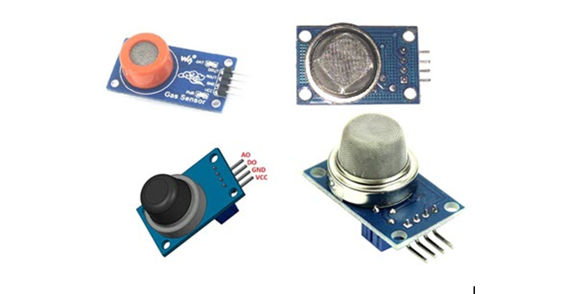

الحساسات (المستشعرات) Sensors :
تعتبر الحسّاسات آليّة إلكترونيّة حديثة؛ لاستشعار البيئة الفيزيائيّة المحيطة بها، فهي عبارة عن: “جهاز يعمل على تحويل الكميّات الفيزيائيّة من ضغط، وحرارة، ومجال مغناطيسيّ، وإشعاع، وصوت، ولمس، وأشعّة غير مرئيّة، وإضاءة، ودخان، وغيرها من الكميّات الفيزيائيّة، إلى فرق في الجهد الكهربيّ”، ووحدة قياسها تختلف باختلاف الكميّة الفيزيائيّة، ونوع الحسّاس.
وظيفتها:
تقوم الحسّاسات بعمل مفتاح ON/OF، مبنيّ على فكرة تغيّر فرق الجهد الكهربيّ داخل دائرة الحسّاس، والتي تُستعمل في أجهزة الإطفاء الأوتوماتيكيّة، وكاميرات المراقبة، وأجهزة الإنذار، فمثلًا عند سقوط الإضاءة على حسّاس للضوء، أو سقوط الدخان على حسّاس للدخان، تنخفض مقاومته للتيّار الكهربائيّ؛ فيقوم بغلق الدائرة الكهربائيّة؛ فيعمل جهاز الإنذار، أو غيره.
